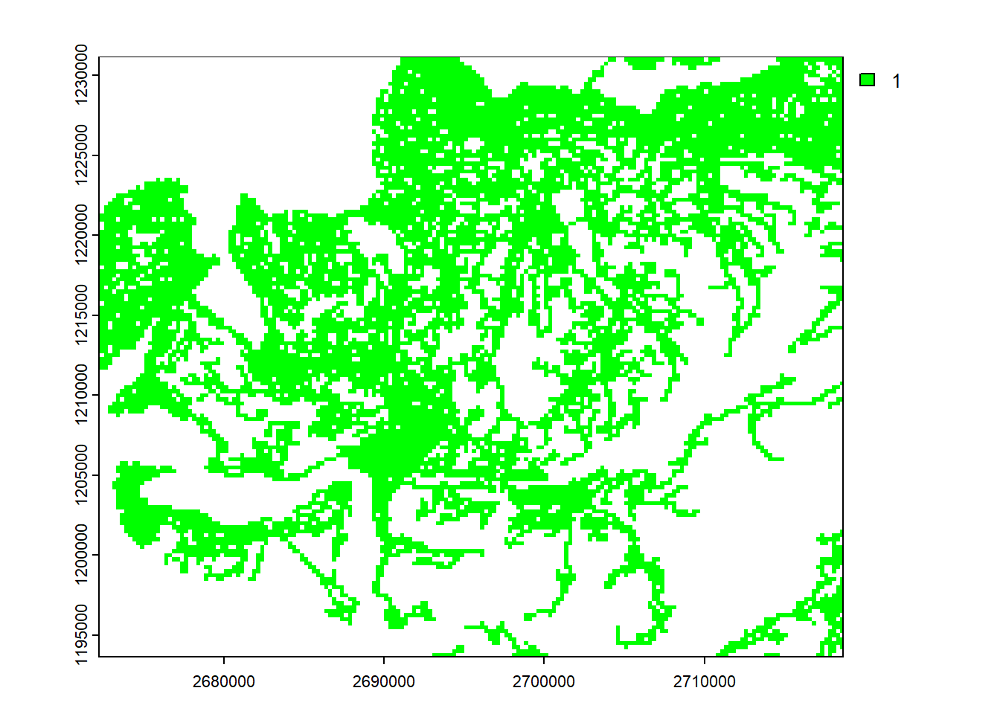
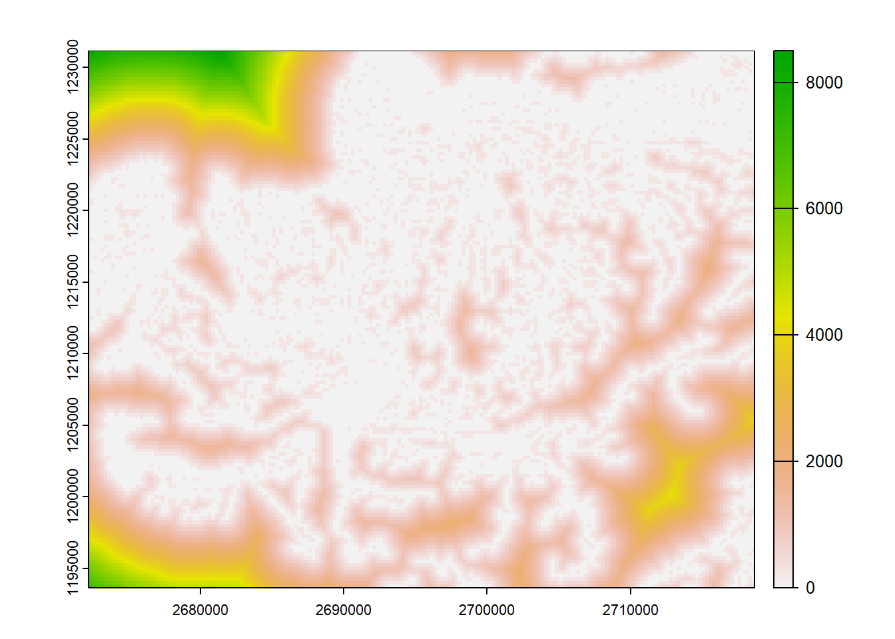
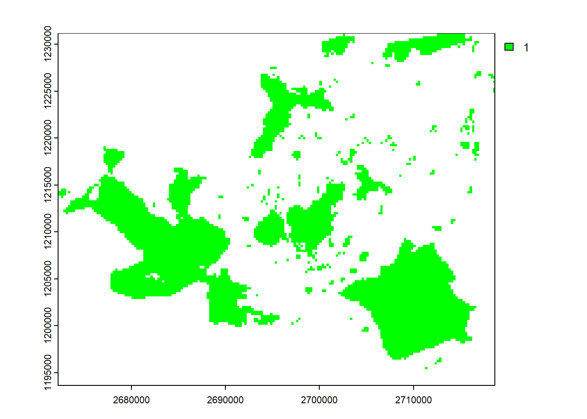
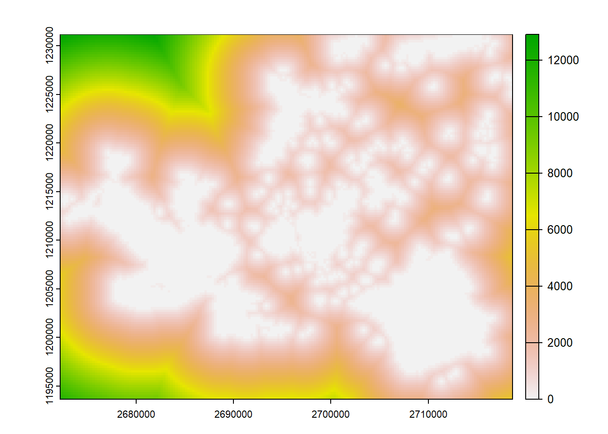
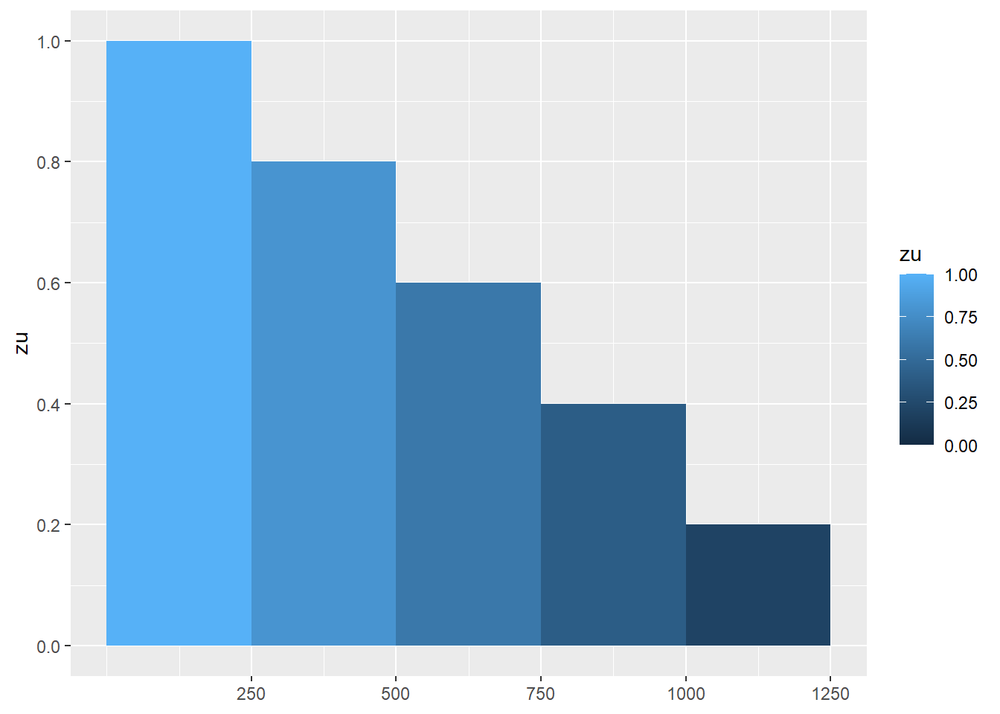
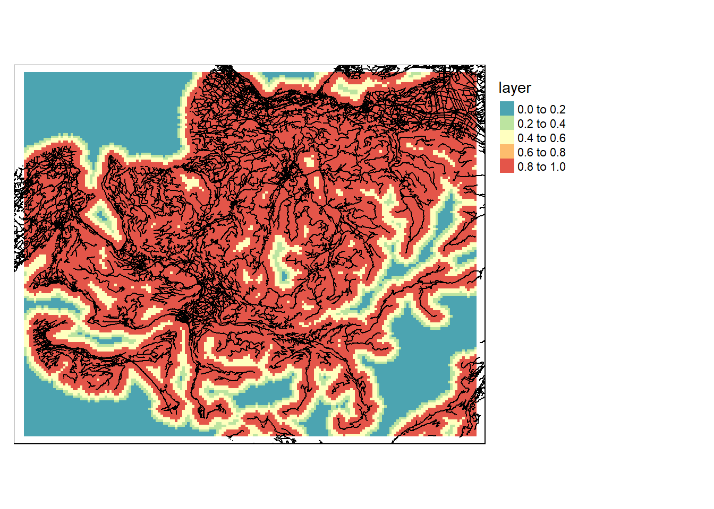
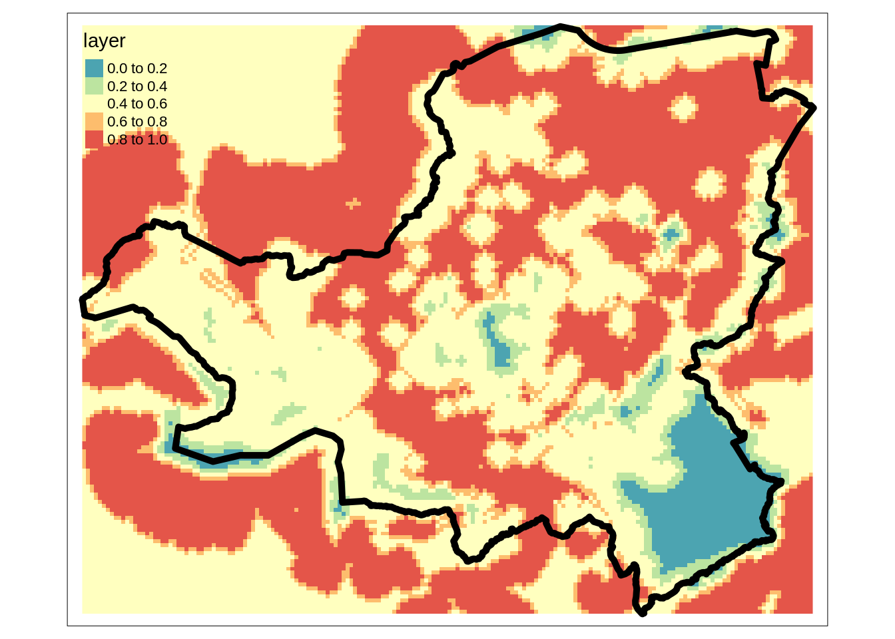
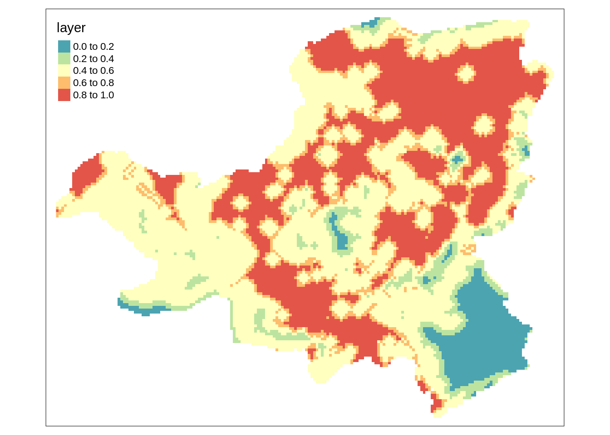
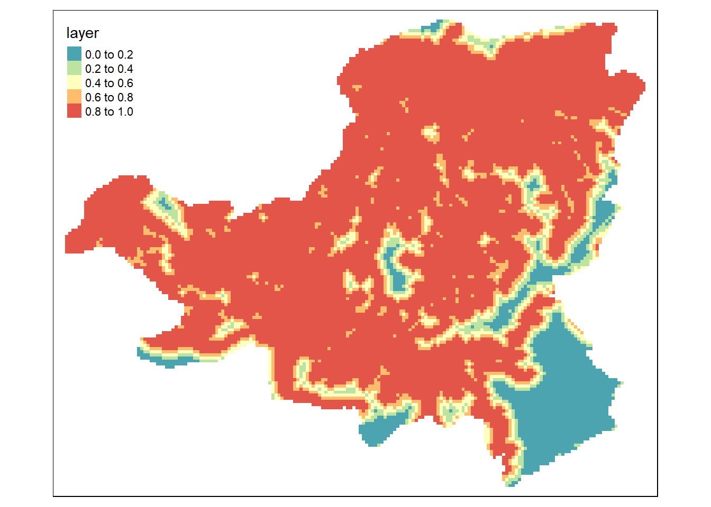

| Datensatz | Beschreibung | Typ | Format | crs |
|---|---|---|---|---|
| Untersuchungsgebiet_Schwyz | Kantonsgrenze des Kantons Schwyz | Vektor (Polygon) | gpkg | CH1903 / LV03 |
| Nationale_Schutzgebiete | Nationale Schutzgebiete | Vektor (Polygon) | gpkg | CH1903 / LV03 |
| Strassen | Strassen Netzwerk aus SwissTLM3D | Vektor (Line) | gpkg | CH1903 / LV03 |
| Bewohnte_Flaeche | Siedlungsfläche | Vektor (Polygon) | gpkg | CH1903 / LV03 |
| Waldgebiete | Wald (TLM3d) | Vektor (Polygon) | gpkg | CH1903 / LV03 |
| Seeflaechen | Seen | Vektor (Polygon) | gpkg | CH1903 / LV03 |
| wind250m.tif | Mittlere Windgeschwindigkeit in m/s, 250m Auflösung | Raster | tif | CH1903+ / LV95 |
| dhm250m.tif | Digitales Höhenmodell in 250m Auflösung | Raster | tif | CH1903+ / LV95 |
Rauman 5: Übung A
In der folgenden Übung möchten wir potentielle Standorte für Windkraftanlagen im Kanton Schwyz ermitteln. Zu diesem Zweck führen wir eine Multikriterien-Evaluation durch. Für diese Analyse stehen uns folgende Datensätze zur Verfügung:
In diesem ersten Teil (Übung A) widmen wir uns, basierend auf Gilgen und Sartoris (2010) und Tegou, Polatidis, und Haralambopoulos (2010), folgenden Parametern:
- Erschliessung (je näher an der Strasse desto besser)
- Distanz zu Schutzgebieten (je weiter weg desto besser).
Diese Eignungsbewertung setzen wir in den folgenden Aufgaben in R um. Starten Sie R und laden Sie die nötigen Libraries in Ihre Session (s.u.)
library("sf")
library("terra")
library("dplyr")
library("tmap")
library("ggplot2")Aufgabe 1: Vektor Daten laden und anzeigen
Laden Sie das File windkraft_geodata.gpkg von Moodle herunter (siehe Tabelle 60.1). Dieses beinhaltet alle Vektordaten, die für die Bearbeitung der Multikriterien-Evaluation benötigt wird (Bewohnte Flächen, Nationale Schutzgebiete, Seeflächen, Strassen, Waldgebiete sowie die Kantonsgrenze von Schwyz). Die Namen der verfügbaren Listen können Sie mit sf::st_layers() ermitteln.
Importiere die benötigten Vektordatensätze und exploriere die Daten. Zur Visualisierung könnt ihr die Funktionen plot oder die Packages tmap oder ggplot2 verwenden.
Schau dir auch das Koordinatensystem an. Was fällt dir auf? Wir würden gerne mit dem neuen Schweizer Koordinatensystem arbeiten (LV95). Um ein Koordinatensystem umzuwandeln benutze die Funktion st_transform().
Code
gpkg_path <- "datasets/rauman/windkraft_geodata.gpkg"
#Vector data
st_layers(gpkg_path)
## Driver: GPKG
## Available layers:
## layer_name geometry_type features fields crs_name
## 1 Bewohnte_Flaeche Multi Polygon 326 1 CH1903 / LV03
## 2 Nationale_Schutzgebiete Multi Polygon 1 1 CH1903 / LV03
## 3 Seeflaechen Multi Polygon 205 5 CH1903 / LV03
## 4 Strassen Multi Line String 28682 13 CH1903 / LV03
## 5 Untersuchungsgebiet_Schwyz Multi Polygon 1 1 CH1903 / LV03
## 6 Waldgebiete Multi Polygon 5580 3 CH1903 / LV03
kt_schwyz <- read_sf(gpkg_path, "Untersuchungsgebiet_Schwyz") |> st_transform(2056)
schutzgebiete <- read_sf(gpkg_path, "Nationale_Schutzgebiete") |> st_transform(2056)
strassen <- read_sf(gpkg_path, "Strassen") |> st_transform(2056)Aufgabe 2: Erschliessung berechnen
Beginnen wir mit dem Kriterium “Erschliessung”. Wir müssen für den ganzen Kanton Schwyz wissen, wie weit die nächste Strasse entfernt ist. Wie wir bereits in Kapitel 58.5 erläutert haben, lässt sich diese Information am besten in einem Raster abbilden.
Analog Kapitel 58.5 müssen wir hierfür den Vektordatensatz auf der Basis eines Templates in ein Raster konvertieren. Für die Erstellung des Templates verwenden wir an dieser Stelle die Kantonsgrenze vom Kanton Schwyz.
Code
# Template mit der Ausdehnung und dem CRS vom Kt. kt_schwyz
# erstellen, und mit einer Auflösung on 250m
template <- rast(kt_schwyz, resolution = 250)
strassen_raster <- rasterize(strassen, template)
strassen_dist <- distance(strassen_raster)Nutze der obige Code um den Wald Datensatz zu rasterisieren und die Distanz zum Wald mit der Funktion distance() zu berechnen. Plausibilisiere den Output indem du ihn visualisierst.
Code
plot(strassen_raster, col = "green")
plot(strassen_dist)

Führe nun die gleiche Operation durch um die Entfernung zu nationalen Schutzgebieten zu ermitteln.
Code
schutzgebiete_raster <- rasterize(schutzgebiete, template)
schutzgebiete_dist <- distance(schutzgebiete_raster)
plot(schutzgebiete_raster, col = "green")
plot(schutzgebiete_dist)

Aufgabe 3: Distanzkriterien Bewerten
Jetzt haben wir die Distanzen zu den relevanten Gebieten berechnet, nun müssen wir diese Distanzen bewerten. Dafür teilen wir die kontinuierlichen Distanzwerte in diskrete Kategorien ein. Wir verwenden für die Aufgabe folgende Einteilung:
Hierfür brauchen wir die Function classify(). Wie wir aus der Dokumentation der Funktion (mit ?classify) entnehmen können, gibt es verschiedene Wege wie wir einen Raster Reklassifizieren können (siehe Beschreibung für das Argument rcl). Eine sehr explizite Variante ist, dass wir für rcl eine Matrix mit 3 Spalten verwenden. Diese drei Spalte stellen from, to und becomes dar.
Wir könnten diese Tabelle in einem Spreadsheet-Programm schreiben und in R einlesen. Alternativ können wir sie auch “von Hand” in R erstellen. Um in R tabellarische Daten zu schreiben empfehlen wir die Funktion tribble(), welche eine sehr anschauliche Art bietet, Tabellen in R zu generieren.
Code
strassen_klassen <- tribble(
~von, ~bis, ~zu,
0, 250, 1.0,
250, 500, 0.8,
500, 750, 0.6,
750, 1000, 0.4,
1000, 1250, 0.2,
1250, Inf, 0.0
)
# Mit geom_rect können wir unsere Distanz klassen visualisieren
ggplot(strassen_klassen, aes(xmin = von, xmax = bis, ymax = zu, fill = zu)) +
geom_rect(ymin = 0) +
scale_x_continuous(breaks = strassen_klassen$bis) +
scale_y_continuous(breaks = strassen_klassen$zu)
Code
# tribble erstellt eine data.frame,
# wir brauchen aber eine matrix
strassen_klassen <- as.matrix(strassen_klassen) Jetzt wo wir diese Matrix haben, können wir sie nutzen um den Kanton Schwyz hinsichtlich der Distanz zum Wald zu bewerten. Dafür verwenden wir die Funktion classify() mit dem Argument include.lowest = TRUE damit eine Distanz von 0m ebenfalls in 1 reklassifiziert wird.
Code
strassen_classify <- classify(strassen_dist, strassen_klassen, include.lowest = TRUE)
# Visualisierung des Resultats
tm_shape(strassen_classify) +
tm_raster(palette = "-Spectral") +
tm_layout(legend.outside = TRUE) +
tm_shape(strassen) +
tm_lines()
Bewerte auf die gleiche Art die Distanz zu den Schutzgebieten. Wir nutzen die Schwellwerte, wie sie in der der nachstehenden Tabelle ersichtlich ist. Du kannst diese aber frei wählen.
Code
schutzgebiete_klassen <- tribble(
~von, ~bis, ~zu,
0, 250, 0.0,
250, 500, 0.2,
500, 750, 0.4,
750, 1000, 0.6,
1000, 1250, 0.8,
1250, Inf, 1.0
)
schutzgebiete_klassen <- as.matrix(schutzgebiete_klassen)
schutzgebiete_classify <- classify(schutzgebiete_dist, schutzgebiete_klassen)| von | bis | zu |
|---|---|---|
| 0 | 250 | 0.0 |
| 250 | 500 | 0.2 |
| 500 | 750 | 0.4 |
| 750 | 1000 | 0.6 |
| 1000 | 1250 | 0.8 |
| 1250 | Inf | 1.0 |
Aufgabe 4: Raster Overlay
Wir haben zwar erst zwei der Kriterien berechnet, die wir für unsere Standortsuche berücksichtigen wollen, doch mit denen können wir schon mal eine erste, unvollständige Beurteilung wagen.
Weil wir für alle Raster das gleiche Template verwendet haben, sind diese perfekt aneinander ausgerichtet. So können wir auf die denkbar einfachste Art die einezelnen Zellen miteinander verrechnen. Auf folgende Weise können wir beispielsweise den Mittlwert pro Zelle berechnen:
Code
overlay_prelim_1 <- (strassen_classify + schutzgebiete_classify)/2
tm_shape(overlay_prelim_1) +
tm_raster(palette = "-Spectral") +
tm_shape(kt_schwyz) +
tm_borders(lwd = 5, col = "black")
Aufgabe 5: Mask raster
Im letzten Plot fällt auf, dass wir auch eine Bewertung für Gebiete ausserhalb des Untersuchungsgebiets haben. Da wir für diese Gebiete keine Geodaten verwendet haben, sind die Resultate ausserhalb des Untersuchungsgebiets nicht gültig. Deshalb ist es sinnvoll, die Werte ausserhalb des Untersuchungsgebeits zu entfernen. Dafür verwenden wir die Funktion mask() zusammen mit dem Vektordatensatz kt_schwzy. Diese setzt alle Werte ausserhalb des Polygons zu NA:
Code
overlay_prelim_1 <- mask(overlay_prelim_1, kt_schwyz)
tm_shape(overlay_prelim_1) +
tm_raster(palette = "-Spectral") 
Aufgabe 6: Weighted Raster Overlay
In im obigen Raster Overlay haben wir alle Kriterien gleich stark gewichtet. Wir können aber auch eine gewichtete Verschneidung durchführen: Wenn wir beispielsweise die Distanz zu den Strassen stärker gewichten wollen als die Distanz zu den Schutzgebieten. Auch das ist sehr einfach:
Code
# Wir dividieren durch die Summe der Gewichte,
# um wieder Werte zwischen 0 und 1 zu erhalten.
overlay_prelim_2 <- (strassen_classify*5 + schutzgebiete_classify*1)/(5+1)
# Resultate ausserhalb des Kantons entfernen:
overlay_prelim_2 <- mask(overlay_prelim_2, kt_schwyz)
# Resultate visualisieren:
tm_shape(overlay_prelim_2) +
tm_raster(palette = "-Spectral")